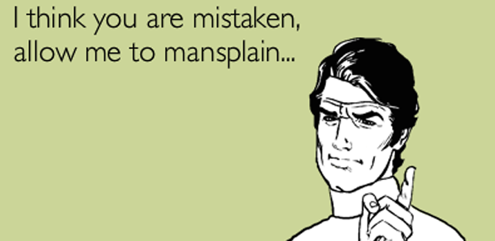

Mansplaining is a concept that emerged in 2008 in a LA Time article by Jessica Solnit named, “Men Explain Things To Me.” If you have any skin the game, you should already know women are primarily looking for venting their emotions in life rather than somebody solving their problems. That is precisely why women continuously and almost always toss monkey wrenches in the machinations of men.
Mansplaining is defined as when a man, when talking to a woman, treats her differently than he would a man and talks down to her with arrogance, pretends she is ignorant, talks with upsetting tones and doesn’t recognize the dignity, humanity and competency of the female engaged with.
This definition is classic narcissism as the women who believe in the concept start from their experiences and extrapolate from there. They don’t understand the concept of larger trends and forming opinions about the world around them from those trends. They don’t understand the concept of men and women being biologically different and socialized differently. They talk a big game about gender and socialization, but that is just a smokescreen for what they really believe – everybody is just like them if those oppressive, gendered masks come off.
With the smashing of sex roles, women love to pretend they are civilizing the men across the board. It is not good enough that women watch men from the home,women must enter workplaces, locker rooms and male only spaces – of course, creating diversity and making the world a safer place (for them). Mansplaining reeks of the supreme self-centeredness of the modern woman, thinking her feelings are first priority in any situation that involves men.
The modern woman is so paranoid she is in constant awareness of being a female and constantly worrying men are thinking of her as a woman instead of a human being. She thinks differences between men and women are erected in order to suborn women and thinks the solution is she needs to be treated as a human being devoid of sex – but one also with significantly heightened sensitivity, due to sexism of course. Someday she will deal with her low self-esteem once the patriarchy ends – oh, wait. She doesn’t even realize that is the majority of her problem. Hence, the narcissism.
Women, like the above Jen McCreight, treat serious issues as fun, empowering and exhilarating – often taking many pictures and making kissy faces or other ludicrous poses. This is mocking behavior, as they have been taught that men and what men do is and are inferior to what women do. All those TV shows for kids that show ass-kicking females and male followers inculcate views that males are boorish, ineffectual and are simply side-kicks to a female’s life. Later in life, groups and movements aimed getting women into math and science programs reinforce the idea that men have it better in society and women need a leg up over the hopelessly privileged man. The drowning multiplicity of government and private programs exclusively aimed at coaxing the oppressed woman up the dreadfully sexist male corporate hierarchy (with the direct aim at blasting the misogynistic glass ceiling) is the final nail in the coffin that allows women to pretend they are better than men, while simultaneously allowing them to believe in male privilege.
Nirvana awaits “there,” as they are told. “There” is whatever mythical construct they have erected into their head about how their life will play out, with respects to career, fashion and male partners. Children vaguely factor in after that, taking on a dangerously high importance in middle ages as their narcissistic dreams are dashed on the cold coasts of reality.
Kate Bolic, working with Susan Walsh, penned a narcissistic piece in The Atlantic in which she laid out the metaphor that women and climbed the staircase into their middle age, with the pithy and pretend achievements of career success, and find there are no handsome, roguish men waiting to sweep them off their feet and into in vitro-aided marital bliss. That metaphor is how life has been dictated to them by associates, friends and the all-powerful media. You think aging women want to consume media that states that at age 30 that only 10% of their eggs are left? No, they will consume media that states they are in their sexual prime with the “real” men stepping up to capture their narcissistic heart.
If this isn’t bad enough, they have been tearing through colleges and workplaces, demanding equal treatment which, to them, means treating them as they wish to be treated. They falsely assume how men treat each other, then demand to be taken seriously as equals in these institutions they seek access to. When they find out that they might get challenged or just treated as “one of the boys,” they find out their delusions about themselves are being cracked, so they claim that such behavior is sexist, violating her human dignity and is exclusionary.
In their self-absorbed collective effort to stymie opinions that spur uncomfortable feelings, they also drown intellectualism and human achievement in the shallowest pool imaginable. Valuing comfort over challenge, they lay to rest the competitive – and often brutal – world of intellectual debate. Remind me again – are men better comedians than women? Gee, I wonder why.
A common refrain in feminist and female circles is how they love a vigorous debate, but then toss in massive roadblocks suffocating debate. Often times, especially with feminism and so-called women’s issues, the roadblocks are so severe that if you were even begin to climb them, you would immediately treated as a misogynist. They claim to be pro-this and pro-that, but their actions belie their true intent. The complete and utter suffocation of true intellectual sparring is what is desired. The replacement is the feel-good world of authority figures dispensing with – often times cruelly and hatefully – out-group members who have yet to convert to the state religion of politically correct feminism.

Mansplaining is yet another attempt at suborning men to women.
They pretend men talk to them in such a “sexist” manner because they are women. What they have done is find out when men treat women like equals. We debate, attack and go back and forth constantly with other men. We break each other’s balls and mock each other. Then we go get drunk at the bar like brothers. Women don’t understand that. Since they start from themselves and extrapolate outwards, they take every slight as personal and meant to degrade them – you know, how women treat each other. They apply the relational calculus to men and find the answer is horribly sexist because they falsely assume if equality is achieved between men and women then conflict, anger and all untoward emotions will drain away into a modern day Eden.
The most dangerous assumption is that human progress, done often by the elites, is a product purely of privilege. It truly is done by genius, hard work and luck. I can’t even begin to count how many women I have had passing contact with who giddily assume once they get degree X, job Y or the nebulous Z they will finally be able to start changing the world, inventing that or greatly forming that. It reminds me of somebody who thinks they need a degree in English to be a writer. It is the narcissistic idea that America will always be great and always prosper. Like I noted with McCreight above, she is supremely superficial and her pathetic little sign, “Science In Progress!” while showing her boobs is just sad. She reinforces women watch men make scientific process while flaunting her only sexual goods. Checkmate, feminist.
Mansplaining, at its heart, is about the idea the progress just happens and men will continue to invent, theorize and do it all with women present – just so long as they censor their thoughts as women wish. It is like going to a psychologist and your therapist saying, “You can say whatever you think or feel in so long as it does not offend me.” There would be no therapy on that psychologist’s couch.
Women will pretend they are part of technological, scientific and theoretical progress, often times clinging to the coattails of a man who needs a female name on the study. It needs to be said that a few women do do original research, but the majority of women are just around to status-whore and self-aggrandize. Some women do contribute greatly, but their accomplishments are crowded out by self-absorbed women who are only interested in advancing their self-image as X, Y or Z. Women are just there for the ride, clinging to the idea they have the same qualities as the men they desire and get fucked by.
This fatal self-absorption portends dark things for America. As the arc of America keeps pressing further and further downward, women will clamor for more government money, more governmental intervention and more seats at the table of power, claiming women’s voice will cure the ailments of America, simply because they want the trappings of power, not real power.
What they don’t realize is they are asking for the exact poison that felled America. The crushing narcissism and authoritarianism of the modern women has greatly contributed to the decline of America, but who really cares? Life is all just a performance, just a facade.
Read Next: The Scorpion And The Frog